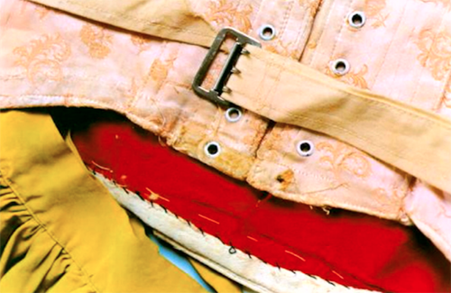
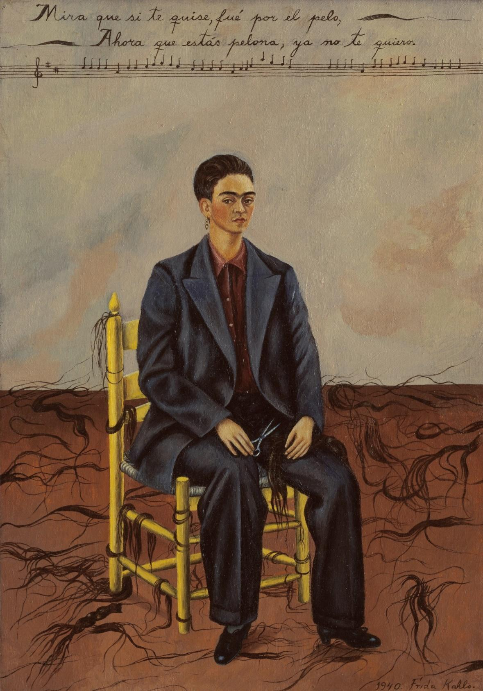
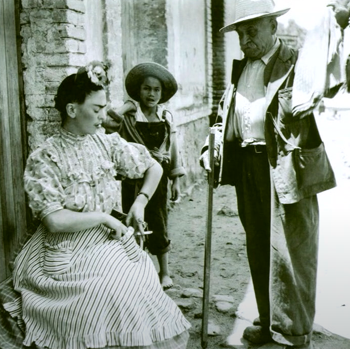
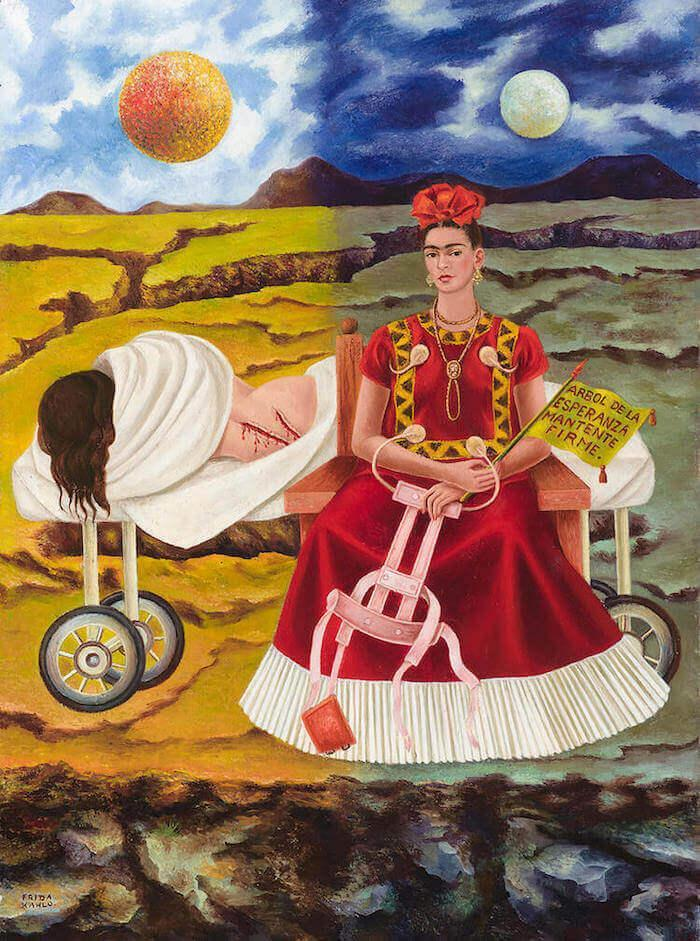
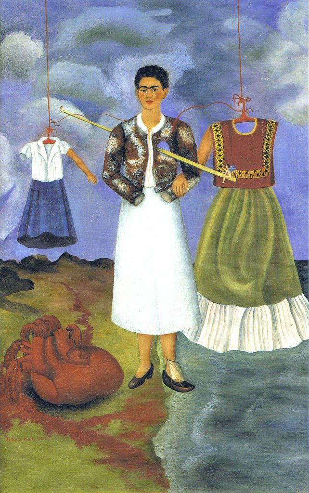

Mending Memories: Frida Kahlo’s Wardrobe
Claire Sigal
Art History, Concordia University
Mending, from an outside perspective, may not seem to warrant much thought or importance. A beloved old skirt gets some wear and tear, giving people who can sew the opportunity to use their skills, while those clueless about the world of mending send their garments to the nearest seamstress or dry cleaner at a low cost. To the menders, this delegation seems like a loss—mending a garment is an intimate experience, and to mend one’s own clothing may be the closest a person can get to mending their own body and mind. In Dóra Pétursdóttir and Bjørnar Olsen’s text “An Archaeology of Ruins,” the everyday wrinkles and tears found in clothing are called “memories,” a term originally used by nineteenth century tailors.1 The intimacy of one’s clothing is exemplified by Jonathan Senchyne’s text “Vibrant Material Textuality: New Materialism, Book History, and the Archive in Paper,”2 wherein the scholar reveals that rags which have sustained “intimate contact”3 with young women’s bodies have romantic potential, as they capture their owner’s essence. The idea of mending as care, extending to self-care and self-mending for the purpose of this essay, is put forth by Maria Puig de la Bellacasa in her Matters of Care: Speculative Ethics in More than Human Worlds.4 I will apply Bellacasa’s concepts to Frida Kahlo’s well-loved clothing, as evidenced by its many “memories,”5 examined with the visual aids of Miyajo Ishiuchi’s book of photographs, Frida by Ishiuchi.6 Famed for her work surrounding bodily scars, Ishiuchi extends the idea that a scar captures a moment in life, like a photograph, to the apparent signs of mending and wear on Kahlo’s clothing. Kahlo’s eclectic and memory-filled wardrobe conveys a great deal about her—her cultural influences, the kind of person as whom she wished to be perceived, the way she moved while wearing the clothes (through her “memories”), and her corporeal issues. Through these images, the viewer learns what Frida wished to construct or conceal from the outside world.
Kahlo’s wardrobe was locked away for fifty years in a bathroom in her home, the Casa Azul, under the request of her partner, Diego Rivera. Those who unearthed this trove described it in haptic language: “Perhaps some curious alchemy of cosmetic powders, pharmaceutical chemicals, and humidity, despite creating a strange smell, […] protected this magnificent legacy.”7 Michelle McVicker, Current Collections and Education Assistant in the Museum at FIT, spoke in her colloquium, “‘The Traces of Use:’ the Dresses of Frida Kahlo” 8. She addressed the physical state of Kahlo’s clothing when they were rediscovered. McVicker describes Kahlo’s “memories” as follows: “Paint stains [where she lay her palette while painting in her lap], cigarette burns, mending done by Kahlo […] or at her bidding. [Unprotected garments had] stains from paint and medicine as well as fading” 9 (fig. 1). These descriptions are novelistic and romantic. Clothing is fundamental to the Romantic style, which can be defined as heightened emotion and intimacy in literature and art. Jonathan Senchyne discusses the romance of rags, expressing that, “[t]he handkerchief becomes soiled and worn through contact with the intimate parts of the woman’s body. [By carrying its residue,] ragged cloth has a certain force. [This] intimate relation to her body dictates similarly intimate things, like a lover’s note.”10 This is indicated to the viewer not only in Kahlo’s wardrobe, but in her painting Self Portrait with Cropped Hair (fig. 2), in which she wears Rivera’s suit. The artist’s understanding of clothing as intimate to the body extends to her treatment of her own clothing, and therefore her self-presentation.

Fig. 1. Miyako Ishiuchi, Detail of Mended Corset and Skirt, photograph,
2011, Museo Frida Kahlo, Mexico City.

Fig. 2. Frida Kahlo, Self Portrait with Cropped Hair, 1940, oil on canvas,
40 x 27.9 cm, MoMA, New York.
Nietzsche was beloved by Kahlo in her lifetime, influencing her in more ways than solely intellectually. He wrote that one created oneself throughout one’s whole life.11 Kahlo did this by creating her own persona through her costumes and feigned energetic spirit, despite her tiring illnesses.12 The concept of self-creation is tied to that of self-mending. Kahlo was in pain corporeally and mentally due to her chronic illnesses and frequent surgeries; her body was often in tatters, and in many of her paintings she is pierced like a pincushion, bleeding, or otherwise eternally pained, ripped apart like a bad sewing project. The mending performed on her clothes, which appears amateurish, was likely Kahlo’s own work. In Detail of Mended Corset and Skirt (fig. 2), these imperfectly spaced, haphazardly basted stitches are “memories” in and of themselves. They are Kahlo’s metaphorical fingerprint, remnants of the contact she had with the garments. The garments are relics of Kahlo’s spirit, and they reveal a will to mend. Kahlo was often in pain, but she soldiered on, and with style. The detail and care given to her clothing becomes the care she gives to herself; she creates herself elaborately. Her clothing represents her cultural influences and her anti-capitalist values as she mixed and matched her outfits “to her own tastes,” 13 not following one culture’s set of rules. For example, in the photograph, Kahlo Buying Fabrics in Striped Dress (fig. 3), Kahlo wears a bespoke dress made from
[red cotton] fabric manufactured by pedal looms with blue stripes spaced two inches apart. The material was originally used for an old-style wrap around worn by elderly women. Seamstresses transformed the fabric into [this dress] in which the stripes were vertical on [its top] and horizontal on the skirt.14

Fig. 3. Leo Matiz, Kahlo Buying Fabrics in Striped Dress, 1846.
Kahlo’s use of local fabrics with a coded, rich history, incorporating a European silhouetted top with its high neckline and puffed sleeves, paired with this hybrid European-Mexican skirt is Kahlo. The motif of flouncing is featured on the breast of the blouse, the cuffs of the sleeves, the pockets, and hem of the skirt, creating a continuity within the outfit. She unifies her influences and values by combining them into one outfit, and thus into one “self.” Her desire to be situated within Indigenous Mexican culture, from which she felt alienated partly due to her half-European background, is evident in her use of this fabric, yet she does not erase her European influences, as can be seen in the European elements of this dress (fig. 3). Diego Rivera heavily encouraged Kahlo to wear traditional Mexican clothing. When she and Rivera divorced, she returned to wearing the exclusively European clothing of her youth. She cut her long hair short, as long hair is traditional for women in several indigenous Mexican cultures. In these ways, Kahlo erased the image of herself that Rivera loved. The ruthless manipulation of her self-presentation through her wardrobe and cosmetic choices show that she was equipped equally to self-create and self-destroy, repeatedly altering her fabricated self according to her circumstances.
The act of sewing is inherently violent: it involves cutting, ripping, and stabbing with needles. The undertaking of a sewing project involves both destruction and creativity to an extent other aesthetic pursuits do not match. People wear clothing every day—resting right against their bodies like extensions of themselves, often displaying values or social class. Violence is equally a part of life, particularly for women. The fact that sewing is traditionally considered women’s work is interesting in this respect—women are historically valued as creators of life, and this concept was present and in Kahlo’s mind. Symbols of the Aztec goddess Coatlicue, who is associated with birth, violence, sacrifice, and death are often seen in Kahlo’s works along with depictions of Kahlo’s own struggles with these concepts. 15 Many are also likely predestined to other pains such as physical, sexual, and emotional abuse. Sewing is often dismissed as feminine, unthreatening, gentle work. This erases the fact that the violence inherent in its process adds to the complexity of the task. In many of her paintings, Kahlo depicts the stabbing and piercing of her flesh. Tree of Hope, Remain Strong (fig. 4) illustrates the similarities between sewing and surgical suturing. Her exposed back lacerations could be mended, rejoining her flesh by sewing her back up. This surgery was intended to help her, but was bloody and violent all the same.

Fig. 4. Frida Kahlo, Tree of Hope, Remain Strong, 1946, oil, 41 x 56 cm.
In her life, Kahlo presented herself bursting with vitality with vibrantly coloured cosmetics, ribbons, and clothing, seeming unabashed. When one compares this version of Kahlo to those in her paintings—in which she is exposed, victim, empty of facial expression, parts of her body gory and nude 16—Kahlo’s “pieces” can be hard to negotiate into a cohesive whole. She is complex and meticulous in her representation of both types of works; in her paintings, much attention is paid to her aesthetics in keeping with her everyday looks, though they are rarely the focus of the painting unless they are symbolic. In Memory of the Heart (fig. 5) Kahlo is flanked by the school clothes she wore as a child in a European-style school, as well as the traditional Mexican clothing she wore as an adult. These garments are symbolic of her past iterations. Kahlo depicts herself as impaled and injured (fig. 5), figuratively stringing up her fragmented past identities through clothing. Each outfit represents her past and only links arms with her through a single arm projecting out of each sleeve. Her past bodies, represented by arms, can only attach to her present one and be “fleshed out” through the clothing itself. It is as if her past iterations are only identifiable through what she wore. Her body is a fragment of her past while her clothes remain whole, like a vivid memory, her past body a ruin.

Fig. 5. Frida Kahlo, Memory of the Heart, 1937, oil on metal, 40 x 28 cm.
Kahlo’s choice of aesthetics was a performance which was often appropriative. Her use of Indigenous Mexican clothing was not authentic, as the artist herself stated, “I’ve never been to Tehuantepec…nor do I have any connections to the town, but of all Mexican costumes this is the one I like the best [and most frequently worn].” 17 In saying “This is the one I like the best,” she shows a clear fondness for the clothes. These aesthetics became her truth through repetition, whether she had a right to do so or not. Despite it not being culturally authentic to her in her time, it was incontestably a fundamental aspect of her representation.
A person’s wardrobe is extremely telling of who they are—it reflects their
personal and cultural values, place in society, and their aesthetic
preferences. Kahlo’s self-creation through her clothing choices is in
keeping with the values she wished to project: vitality, vivacity, diverse
cultural influences, and unique beauty. The intimate nature of the clothes
she left behind show her “memories” through a paint stain, cigarette burn,
or through mending performed by the artist herself. Kahlo self-creates and
self-mends through her clothing, doctoring together a ubiquitous identity,
unifying herself through her physical representation. The act of sewing thus
remains both as violent and creative as we can understand Frida Kahlo’s life
to have been.
Notes
[1] Dóra Pétursdóttir and Bjørnar Olsen, “An Archaeology of Ruins,” in
Ruin
Memories: Materialities, Aesthetics and the Archaeology of the Recent
Past,
eds. Bjørnar Olsen and Dóra Pétursdóttir (London and New York: Routledge,
2014), 10.
[2] Jonathan Senchyne, “Vibrant Material Textuality: New Materialism, Book
History, and the Archive in Paper,” Studies in Romanticism 57, no. 1
(Spring
2018).
[3] Senchyne, “Vibrant Material Textuality,” 69.
[4] Maria Puig de la Bellacasa, Matters of Care: Speculative Ethics
in More
than Human Worlds (Minneapolis: University of Minnesota Press,
2017).
[5] Pétursdóttir and Olsen, “An Archaeology of Ruins,” 10.
[6] Miyajo Ishiuchi, Frida by Ishiuchi (Mexico City: Editorial RM,
2013).
[7] Michelle McVicker, “Colloquium: Michelle McVicker ‘The Traces of Use,’
The Dresses of Frida Kahlo,” lecture at FIT, 2018, YouTube video, 21:48,
https://www.youtube.com/watch?v=xQ_2eWmQkOg&t=15s.
[8] McVicker, “The Traces of Use.”
[9] McVicker, “The Traces of Use.”
[10] Senchyne, “Vibrant Material Textuality,” 69.
[11] Graham Parkes, “Nietzsche on the Fabric(ation) of Experience,”
Journal
of Nietzsche Studies, no. 9/10 (Spring/Autumn 1995): 10.
[12] Frida Kahlo, The Diary of Frida Kahlo: An Intimate
Self-Portrait, ed.
Sarah M. Lowe (New York, NY: Harry N. Abrams, Inc., Publishers, 1995), 248.
[13] McVicker, “The Traces of Use.”
[14] McVicker, “The Traces of Use.”
[15] Janice Helland, “Aztec Imagery in Frida Kahlo’s Paintings: Indigeneity
and Political Commitment,” Woman’s Art Journal 11, no. 2 (Autumn,
1990 -
Winter, 1991): 8-13.
[16] Kahlo, The Diary of Frida Kahlo, 248.
[17] Margaret Hooks, Frida Kahlo: Portrait of an Icon (Nashville:
Turner,
2003).